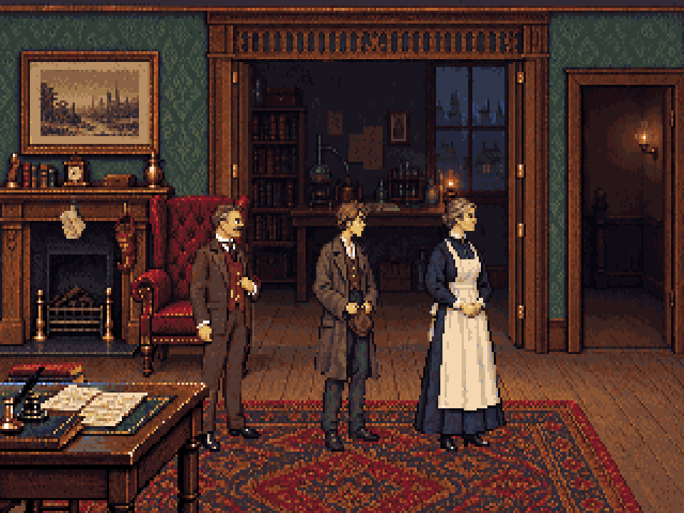
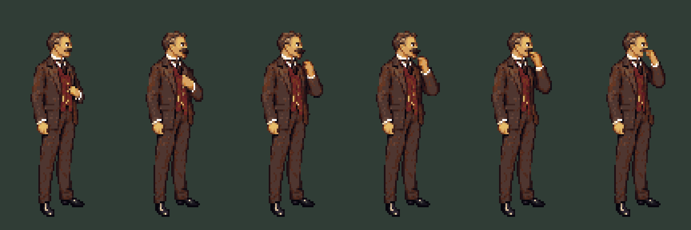
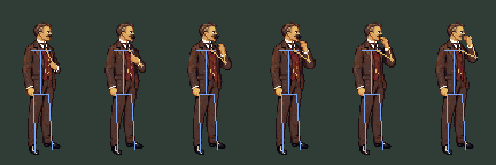
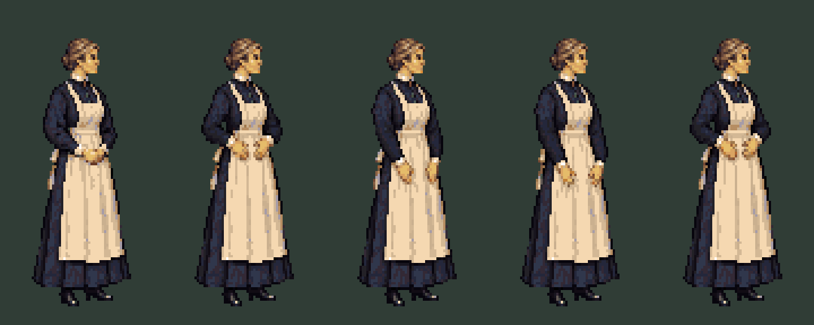
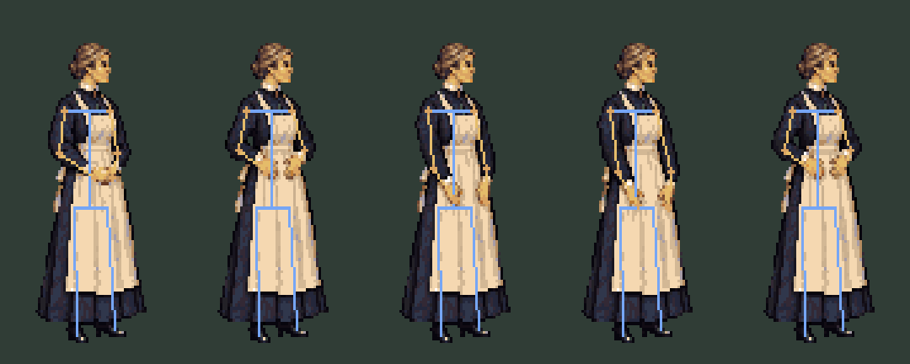
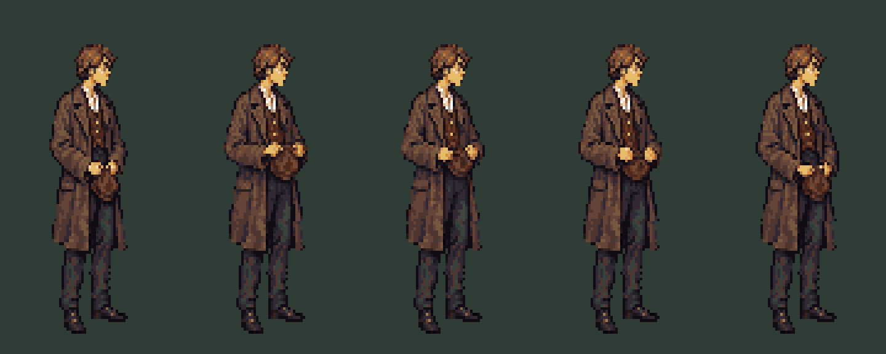
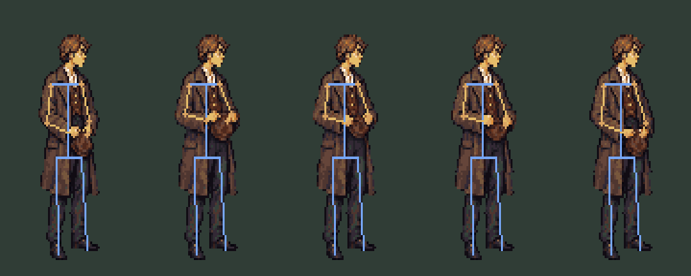

The discarded portrait habits become body gestures. Watson smooths his moustache, Mrs Hudson smooths her apron, and Toby twists his cap. Holmes keeps his existing idles.

Room staging is a scale proof. This study is not yet registered in the game; playback here repeats frequently for review.
Watson · moustache
Mrs Hudson · apron
Toby · cap
Neutral comes first. Yellow lines mark estimated shoulder–elbow–wrist positions; the body axis and planted feet stay fixed. The guide is a review overlay, not a deformation rig.






Workflow and implementation notes · Timing and anchors · Pixelorama verification · Generation prompts